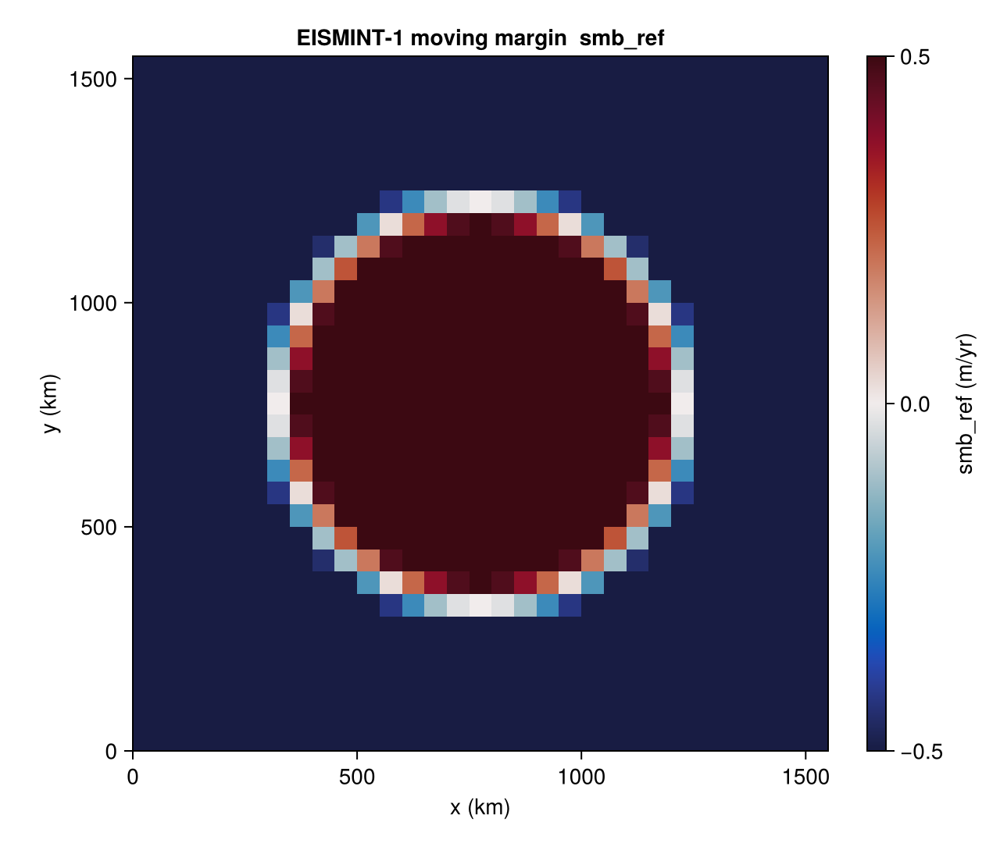

EISMINT-1 moving margin
EISMINT1MovingBenchmark is the moving-margin experiment of the original EISMINT intercomparison (Huybrechts et al. 1996). The ice sheet grows from zero on a flat bed under a radial surface mass-balance pattern with a finite equilibrium-line radius; the margin advances freely (it is not pinned by domain edges or sea level).
There is no closed-form solution. The benchmark is host-driven and typically compared against the published steady-state dome heights and margin positions across the EISMINT intercomparison models.
Constructor
EISMINT1MovingBenchmark(;
dx_km::Real = 50.0,
L_km::Real = 1500.0,
R_el_km::Real = 450.0,
smb_max::Real = 0.5,
smb_grad::Real = 0.01,
T_srf_const::Real = 270.0,
Q_geo_const::Real = 42.0,
n_glen::Real = 3.0,
A_glen::Real = 1.0e-16)The grid is square [−L/2, +L/2]² with cell centres so that the summit (origin) sits at a grid node.
Forcing
The surface mass balance is a radial cap pattern around the origin:
smb_ref(x, y) = min(smb_max, smb_grad · (R_el − r)) r = √(x² + y²)i.e. a positive cap of smb_max (m/yr) for r ≤ R_el − smb_max/smb_grad, linearly decreasing to zero at r = R_el, and increasingly negative beyond. With the defaults, R_el = 450 km and the saturation radius is at r = 400 km.
state(b, 0) returns zero ice (H_ice = 0), a flat bed, a very negative sea level (forces all grounded), the radial SMB pattern, uniform T_srf = 270 K and Q_geo = 42 mW m⁻², and a fully dynamic ice mask. Hosts integrate forward to reach the moving-margin steady state.

Helpers
IceSheetBenchmarks.EISMINT1MovingBenchmark — Type
EISMINT1MovingBenchmark(; dx_km=50.0, L_km=1500.0,
R_el_km=450.0, smb_max=0.5,
smb_grad=0.01, T_srf_const=270.0,
Q_geo_const=42.0,
n_glen=3.0, A_glen=1e-16)EISMINT-1 moving-margin benchmark spec.
IceSheetBenchmarks.eismint_moving_smb — Function
eismint_moving_smb(b::EISMINT1MovingBenchmark, x_m, y_m) -> Float64Surface mass balance at point (x, y) in metres:
smb = min(smb_max, smb_grad · (R_el_km − dist_km))References
- Huybrechts, P. et al. (1996). The EISMINT benchmarks for testing ice-sheet models. Ann. Glaciol., 23, 1–12.